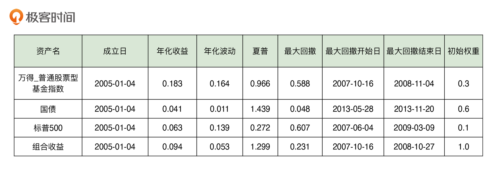

- 00 开篇词 为什么说程序员最适合学财富管理？.md.html
- 01 财富框架：建立属于你自己的财富双塔.md.html
- 02 个人发展：你自己的发展才是最大的财富源泉.md.html
- 03 理财金字塔：如何建立稳固的投资理财结构？.md.html
- 04 实战知识：有哪些收益稳健的经典资产配置组合？.md.html
- 05 支点投资法：主动投资是讲逻辑的！.md.html
- 06 不当韭菜：在财富管理的过程中摆正心态，知己知彼.md.html
- 07 职业方向：如何选择一个有前景的职业方向？.md.html
- 08 职业规划：大公司VS小公司，怎样选择更有前途？.md.html
- 09 期权股权：如何正确处理公司的期权、股权？.md.html
- 10 跳槽涨薪：如何规划一条合理的职业道路？.md.html
- 11 财富拓展：35岁失业？程序员如何拓宽财富渠道？.md.html
- 12 房产投资：如何做出理性的买房决策？.md.html
- 13 实战知识：让我们编程计算下怎么还房贷最合适.md.html
- 14 基金投资：如何让专业人士帮你赚钱？.md.html
- 15 实战知识：如何选出一只优质的基金？.md.html
- 16 股票投资：最适合散户的股票投资方法是什么？.md.html
- 17 投资闭环：如何成为越来越专业的投资者？.md.html
- 18 技术优势：程序员如何用技术超越其他投资者？.md.html
- 19 量化投资：典型的量化投资系统都包含哪些模块？.md.html
- 20 价值投资：永远不过时的中长期投资策略.md.html
- 21 趋势跟踪：怎样跟着趋势一起赚钱？.md.html
- 22 轮动策略：如何踩准市场变换的节奏？.md.html
- 23 对冲思想：这个世界上有稳赚不赔的生意吗？.md.html
- 24 多因子模型：整合不同策略，形成合力的顶层框架.md.html
- 25 机器学习：我们能用机器学习来建立投资模型吗？.md.html
- 26 量化实战：从0到1搭建起一套简单的量化投资系统（上）.md.html
- 27 量化实战：从0到1搭建起一套简单的量化投资系统（下）.md.html
- 番外一 王喆对话李腾：程序员对基金经理的灵魂十问（上）.md.html
- 番外三 有哪些能够持续学习的参考资料和相关网站？.md.html
- 番外二 王喆对话李腾：程序员对基金经理的灵魂十问（下）.md.html
- 番外四 知识总结：这门课的全部思维导图.md.html
- 答疑课堂（一） 财富框架篇、个人发展篇思考题集锦.md.html
- 答疑课堂（二） 投资实战篇、投资进阶篇思考题集锦.md.html
- 结束语 知行合一：财富管理是一生的事情.md.html
- 捐赠
15 实战知识：如何选出一只优质的基金？
你好，我是李腾。今天是一节实战课，我会用一个真实的例子，向你展示如何选出我们需要的优质基金。
上一讲中，王喆老师点出了基金投资的两个要点，一是基金的本质，二是选择基金的逻辑。选择基金，分为选择投资赛道和选择基金经理两个步骤。其中，选择投资赛道有两个依据，一是你的资产配置组合，二是基于支点投资法的主动投资。这一讲，我们就利用基金来实现一个可落地的资产配置组合。
在 04讲，我介绍过一个著名的资产配置组合，耶鲁组合，它有着非常优秀的长期年化收益率。一些同学在留言区问，有没有现成的耶鲁组合可以购买。因为耶鲁组合是耶鲁大学的私有基金，所以并不是一个公开可购买的组合，但是不要着急，我们这一讲就可以通过选择基金来实现自己的耶鲁组合。现在就让我们开始吧！
基于耶鲁组合的投资框架
无论是机构还是个人，在管理自己的资产时，首先要考虑的都是顶层的投资框架，然后再自上而下地进行投资决策。这也就是我们在 03讲 中总结的“层级迭代式投资法”。
基金投资当然也要符合我们的投资框架，进行基金投资时，要先选配置方案，再选具体基金。我们之前介绍的“耶鲁组合”就是回答了顶层配置的问题，而选基金则是为了雇佣更专业的基金经理，帮你管理具体的配置项。
这里我们再来回顾一下耶鲁组合的配置方案。耶鲁组合的基本构建思路是：尽量多地引入有坚实盈利逻辑的资产类别。根据这一基本原则，我挑选了兼顾收益率和最大回撤指标的三个资产项，组成了我们自己的耶鲁组合。具体配置方案是30%中国主动股基，10%美国股票资产和 60%的中国债券资产。它的整体收益率如图1所示。这一组合能够达到9.4%的年化收益以及23.1%的最大回撤，综合表现是相当优秀的。

有了大类资产项的配置比例，就到了具体的执行阶段，这时问题来了：无论是中美的股票型基金，还是债券型基金，都有大量的同类基金可供选择。那么，到底如何选出一只优质的基金呢？下面我们就来分别看一下如何选择耶鲁组合中的三个资产项。
如何选择“股票型基金”？
我们首先来看耶鲁组合中“中国主动股基”的部分，也就是我们经常说的主动型股票基金。
主动基金经理的主要工作是什么呢？他们通过深入研究股票基本面和估值水平，预判未来价格走势，进而超配看涨的股票，低配看跌的股票，最终希望跑赢股票大盘指数。我在咱们的类耶鲁组合中配置这部分资产，其中一个考虑就是：希望让投资者享受到中国股市的大盘上涨，以及基金经理的专业能力带来的的双重收益。
也许你之前对主动股票基金没有太多了解，没关系，下面我提供了一套简单的选基流程，包括基金筛选和个基评估两大步骤。如果你心中已经有了一些具体基金的选项，那你可以直接跳到个基评估的步骤。
我们先来看第一步，基金筛选。我们要做的事情是帮你从现在市面上几百只主动股票基金中，快速筛选出几只可能比较不错的基金，迅速缩小研究范围。
很多人在做海选的时候，主要是看基金的收益排名，尤其是短期的一年以内的收益排名。这是我非常不推荐的做法，因为股票型基金的短期收益几乎没有持续性。我曾经做过统计，上一年的收益冠军，在下一年的收益排名是完全随机的。
基金筛选其实有很多专业的评估指标，包括夏普率、阿尔法、波动率等等。使用这些专业指标的确有更好的前瞻性效果，但它们计算复杂，使用上又很讲究方法，个人投资者不容易上手。所以，我建议你可以直接使用一些基金评级机构的评级结果。这些评级一般都考虑了我们刚才提到的复杂指标，并且重点关注过去3年或5年的长期表现，是非常客观且权威的参考。
因此，一个简单又较为可靠的基金筛选方法就是看基金评级。你可以先过滤出五星的基金，如果数量太少，再去选四星的基金产品。市场上发布基金评级的机构有一个列表（基金业协会链接），你可以直接去它们的官网搜基金评级的结果，也可以在天天基金网之类的第三方销售平台上，查找汇总多家的评级结果（如图3）。然后，你就会得到一份初步的高评级基金列表。
在这个列表中，我一般会首先剔除成立未满五年，或者现任基金经理任职不满三年的基金。这样处理的原因我们在上一讲说明过，那就是选基金本质是在选择基金经理，有基金经理长期稳定任职的基金，业绩才是可持续的。
然后，我们应该跳过行业或主题型的基金。因为我们要委托专业的主动基金经理替我们选赛道，而不是自己判断哪个行业或主题未来会有行情。要剔除它们，我们通过名字判断就可以了，比如图3中的“农银医疗保健股票”，显然是一只医疗行业的基金；“工银物流产业股票”显然是一只投资物流行业的基金，这些都可以跳过。
经过层层筛选，我最终选出来招商行业精选、中银中证100指数增强、诺安研究精选、工银研究精选和景顺长城沪港深精选这 5 只基金，放入到备选池。那我们到底应该选哪一只呢？下面，我们就通过个基评估来挑选出一只。
接下来看第二步，个基评估。这一步就是逐个评估你通过筛选得到的少数几只基金，来判断哪一只是你配置主动股票基金资产的合适工具。
在这个过程中，我经常用一种简单高效的工具来完成个基的比较，它叫做“价格比工具”。你只要输入一只基金的名称，再输入一个基准指数的名称，它就会画出基金每日价格（也就是基金净值）与基准指数每日价格的比值走势图，这个比值就叫价格比。
怎么看这个比值呢？如果价格比曲线的任何一段向上走，就代表同期的基金跑赢了基准指数，向上走的幅度就代表了超额收益的大小；如果价格比曲线的任何一段向下走，就代表同期的基金跑输了基准指数，向下走的幅度就代表了跑输的幅度。
那下面，我们就把前面筛选出来的 5 只备选基金放入价格比工具，并且选择沪深300作为基准指数，你可以看一看图4中的结果：
我们看到，价格比工具返回了两张子图：第一张是 5 只基金和基准指数的价格走势，第二张是这5只基金分别对基准指数的价格比的走势。可以看出，5 只基金的价格比走势整体都是不错的，长期来看都在向上走，这证明基金评级机构的评级还是非常靠谱的。
可以看出，景顺长城沪港深精选的价格波动较大，长期向上趋势也弱于其他几只，说明它不是我们要找的合适工具，可以首先被剔除出去。剩下几只基金中，具体挑哪一只基金，还是要根据你的风险偏好来决定。举个例子，如果你的风险偏好非常保守，那当然应该选择价格比走势最平稳的“中银中证100增强”；如果你追求高收益，可以忍受比较大的中途回撤，那么走势最好，但波动较大的“招商行业精选”就更适合你。
你看，有了价格比工具，我们甚至可以通过直接的肉眼观察，进行相当专业的分析，而且得出的结果也不会比专业的投资人士差多少。
如果你心中已经有了一些个基的备选，那么当然就可以跳过基金筛选的部分，直接进行个基比较。举个例子，基金行业内有几位非常知名的基金经理，我们就可以直接看一看他们管理的基金的表现。
这些基金分别是张坤的“易方达中小盘”，李晓星的“银华中小盘”，谢治宇的“兴全合润”。从下面这张价格比走势图可以看出，市场认可这些基金经理是有道理的，因为他们管理的基金，价格比走势（累积超额收益）都是相对稳健地向右上方延伸的。当然，中途也会有起伏和回撤，但整体走势非常稳定。
虽然还有很多专业的指标来衡量基金的好坏，但对于普通投资者而言，熟练使用价格比工具就可以很好地解决基金比较的问题了。在比较不同基金的时候，价格比曲线向右上方延伸的坡度越陡峭，意味着超额收益率越高；曲线越平滑，上面的“毛刺”越少，那么它的最大回撤就越低，意味着超额收益的稳定性越高。
这里，我们再回顾一下整个筛选的流程：
- 用基金评级结果进行初步筛选，剔除掉成立时间太短、基金经理近期换过、偏行业或主题型的主动股票基金和被动指数型基金，得到3到5只符合条件的备选基金；
- 把这3到5只基金放入价格比工具，和沪深300指数比较，看哪只价格比的曲线斜率更高，走势更平稳。
- 根据你的风险偏好，选出最适合你的那只基金。
当然，这三个步骤也适用于其他任何类别基金的选择过程。
如何选择“美股基金”？
选完了国内的普通股票型基金，就轮到了选择下一个财富项，美国股票资产。很多同学可能会问：那我是不是需要去换美元，开美股账户呢？这当然是可行的，但由于国内换汇、跨国汇款等诸多限制，这种操作对于很多新手来说并不友好。所以，下面我会基于国内的QDII基金（在国内募集，投资于海外标的的基金）来实现我们的美股资产配置。
在实战之前，我得先给你补充一个知识：国内的股票市场和国外的股票市场，所处的发展阶段是不一样的。国内市场因为还有大量的水平较低的散户参与，很多股票的定价也比较不合理，所以主动股基往往能够获取稳健可观的超额收益。但是海外成熟市场已经发展了上百年，竞争比较充分，定价也比较有效，所以主动股基很难做出超额收益。
因此，在配置美股资产的时候，我建议直接选被动指数基金，既省心效果也不错。事实上，很多学术研究表明，在美国市场上主动股基的平均水平是跑输指数的。例如诺贝尔奖获得者夏普，也就是夏普比率指标的发明者，他就在一篇文章里论证了所有主动投资者的整体收益率一定等于指数收益率，费后甚至会略低于指数收益率。
选择被动指数基金的思路很简单，就是看基金能不能紧密地追踪目标指数。我们把基金的净值和它的标的指数的净值起点拉到一起，画出两条走势曲线，看这两条线是不是一直贴得很近，就可以了。
这个思路也可以用价格比工具来实现。我们过滤出国内跟踪标普500指数的QDII基金，画出它们对美国大盘指数标普500指数的价格比走势。看到下面的图片，你应该可以很快地判断出哪只基金是更合适的选择：哪只最稳定地接近1，就是跟踪指数最好的指数基金。
如何选择“债券型基金”？
最后，还剩下债券型基金这个财富项。债券型基金是为耶鲁组合提供稳定收益，降低风险的“压舱石”。所以，我推荐你使用长期收益稳定的国债基金作为具体的投资项。
国债基金之间的分化很小，并且收益的波动远远小于股票型基金，所以相对而言我们并不用在选债基上花费太大的精力。我的建议是，你选择一家大型基金公司中规模较大的国债基金就可以了。
当然，为了谨慎起见，我们还可以应用价格比工具进行债基的验证。我自己在三方基金销售平台上搜索了一些名称带“国债”的基金，并输入价格比工具，结果图如下。
可以看出，作为跟踪上证5年期国债（全价）指数的工具，那些价格比在1附近小幅震荡的基金，明显是比其他基金更合适的。而有些基金偏离很大，可能是因为管理不善，也可能是因为它们是以其他指数为投资基准的，并不适合作为耶鲁组合的债券财富项。
除了国债基金外，债券型基金还包括“信用债基金”，这里的“信用债基金”会投资于企业债、政府城投债等标的，额外增加了信用违约风险。如果你不打算承担信用风险，建议在选基时注意区分纯国债的基金和包含信用债的基金，并选择只投国债的基金。
一般来说，我们可以通过基金名称、业绩基准和投资范围三个要素来核对，筛选出包含信用债的基金。
- 基金名称：名称里含有信用、公司债、企业债、双利之类关键字的；
- 业绩基准：业绩基准里包含信用债、企业债或公司债指数的；
- 投资范围：投资范围包含信用债、企业债、公司债的。
基金的建仓与再平衡
到这里，我们已经选好了实现耶鲁组合的基金，下面就该进入具体的交易操作了。这里，我有一些关于建仓的小知识分享给你。
对于波动性比较小的债基，不同时点的建仓成本变化不大，所以没必要定投，直接一步到位就可以，分批定投反而会错失债券的时间收益。
对于波动性比较大的股票型基金，比如说国内的普通股票型基金和标普500的指数基金，是可以考虑在3个月到半年这样的时间尺度上分批建仓的，因为这样可以平滑掉你的建仓时点选择的风险。另外，如果你的可投现金流是按月收到的，那就没得选，只能是定投，每月收到一笔钱投一笔。
建好仓后，下面的事情就是定期的资产配置再平衡了。作为普通投资者，只要我们在购买基金的时候进行了充足的分析，是没有必要在平时频繁查看这个配置组合的。我们只需要每隔一个季度，或者在市场出现大幅波动的时候，计算一下基金组合在几类资产上的配置比例是否因为价格的变化偏离过大。如果偏离不多，就可以不用管，如果偏离得比较大了，就把它再平衡一次，重新调回初始比例。
调整大类资产配置比例的过程，当然要通过申购和赎回具体基金来完成。你可以按照之前选定的基金组合执行再平衡，卖掉资产占比增大的基金，买入资产占比减小的基金；你也可以借着调整顶层配置比例的机会，卖掉一些你不太看好的基金，换成一些你比较看好的基金。
小结
好了，我想对于个人投资者来说，能做到熟练按我今天介绍的方式来选基就足够了。这一讲里涉及到的投资思路并不复杂，但只要严格执行，肯定能让你避开绝大多数选基时的“坑”。
下面，我们再来总结一下这一讲的重要知识：
- 在选择主动股票型基金时，要过滤掉新成立的基金和刚更换过基金经理的基金；
- 价格比指的是基金每日价格（也就是基金净值）与基准指数每日价格的比值；
- 价格比曲线向右上方延伸的坡度越陡峭，意味着超额收益率越高；曲线上的毛刺越少，曲线越平滑，最大回撤就越低，意味着超额收益的稳定性越高；
- 投资美股时，投资QDII被动指数基金是一个兼顾收益率和便捷性的选择；
- 投资债券型基金时，注意区分国债基金和信用债基金；
- 在管理投资组合时，每个季度（或者市场出现大幅波动的时候）进行一次资产的再平衡。
最后需要补充一句，这一讲涉及的基金仅用于举例说明，不构成任何购买建议。
思考题
张坤在2021年初曾经因为重仓白酒股获得巨大收益，被人称为“基金一哥”。但最近，他又因为所管理基金的较大回撤被人说是“跌下神坛”。你可以搜索出张坤管理的基金，然后用价格比工具分析一下这些基金的长期走势吗？从五年期的时间跨度上看，张坤到底是不是一位优秀的基金经理？
期待在留言区看到你的思考和见解。同时，如果你对这一讲的知识有任何困惑，都可以在留言区提出来，我会一一为你解答。
© 2019 - 2023 Liangliang Lee. Powered by gin and hexo-theme-book.